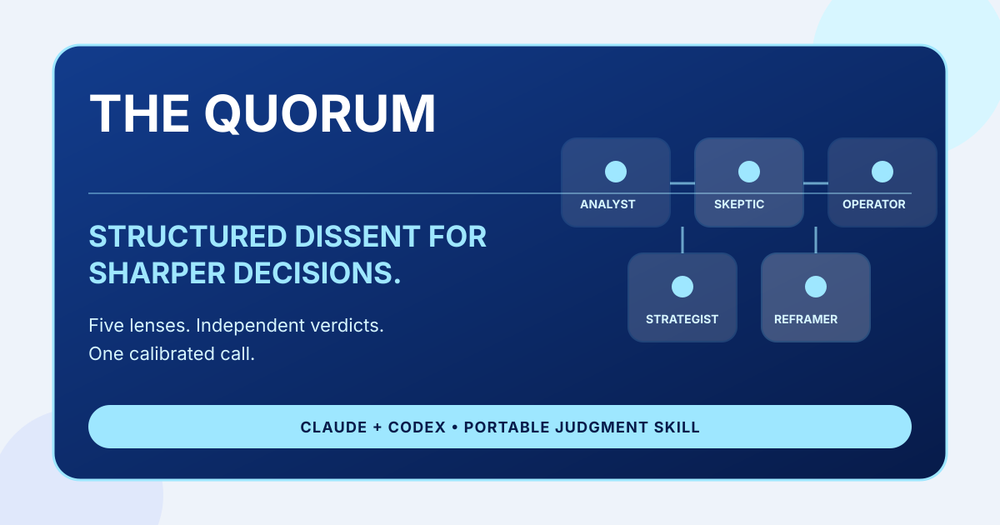

Best for
Hiring decisions, strategy calls, build-vs-buy, partnerships, growth bets, relocations, and other consequential decisions with real trade-offs.
A multi-lens decision support skill for Claude and Codex that pressure-tests consequential choices through five differentiated expert perspectives.

Hiring decisions, strategy calls, build-vs-buy, partnerships, growth bets, relocations, and other consequential decisions with real trade-offs.
AI decision framework, build vs buy skill, hiring decision support, strategy council prompt, and multi-agent reasoning for important choices.
Use The Briefing Room to structure the situation first, Ground Truth to challenge a key claim, and The Quorum when you need structured disagreement before making the call.
"Should we hire Candidate A or Candidate B for a senior role?"
Five independent lenses, visible disagreement, confidence levels, a chairman synthesis, a pre-mortem, and a preserved minority report when dissent matters.
The Quorum is a portable Claude and Codex skill that pressure-tests consequential decisions through five expert lenses and a final synthesis.
Use it for high-stakes choices like hiring, strategy, partnerships, build-vs-buy decisions, and major career or product calls.
Ground Truth gives direct critique from a single calibrated voice. The Quorum creates structured disagreement across multiple perspectives before recommending a path.